Биография
Иван
Егоров
- 5 дан Тэн Шин айкидо
- Мастер спорта России
- Главный тренер Федерации айкидо России
- Вице-президент Федерации Айкидо Чеченской Республики
- Ученик Стивена Сигала

Семья, в которой спорт — образ жизни
Иван Егоров родился 13 октября 1989 года в Москве и вырос в семье, где спорт был образом жизни. Отец — Николай Николаевич Егоров, президент Федерации айкидо России, обладатель 6 дана. Мать — Наталья Владимировна Егорова, мастер спорта международного класса по теннису. От отца Иван перенял понимание айкидо как пути самосовершенствования, от матери — культуру дисциплины и соревновательной работы над собой.
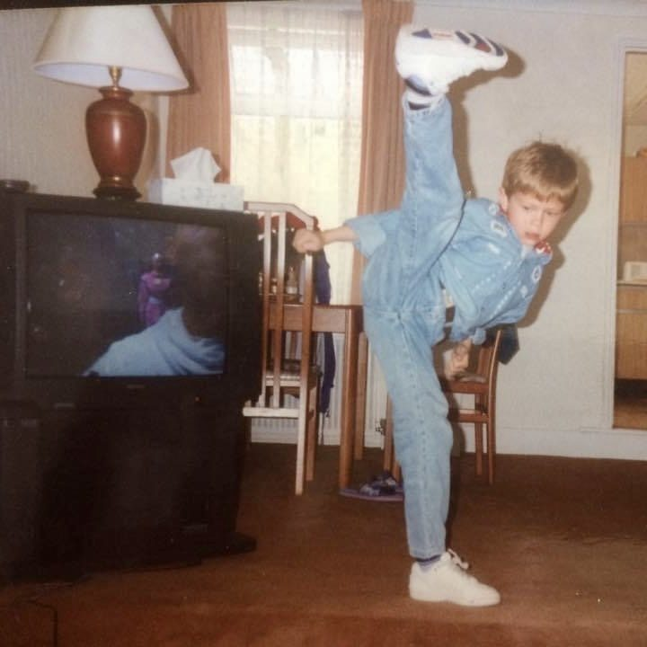
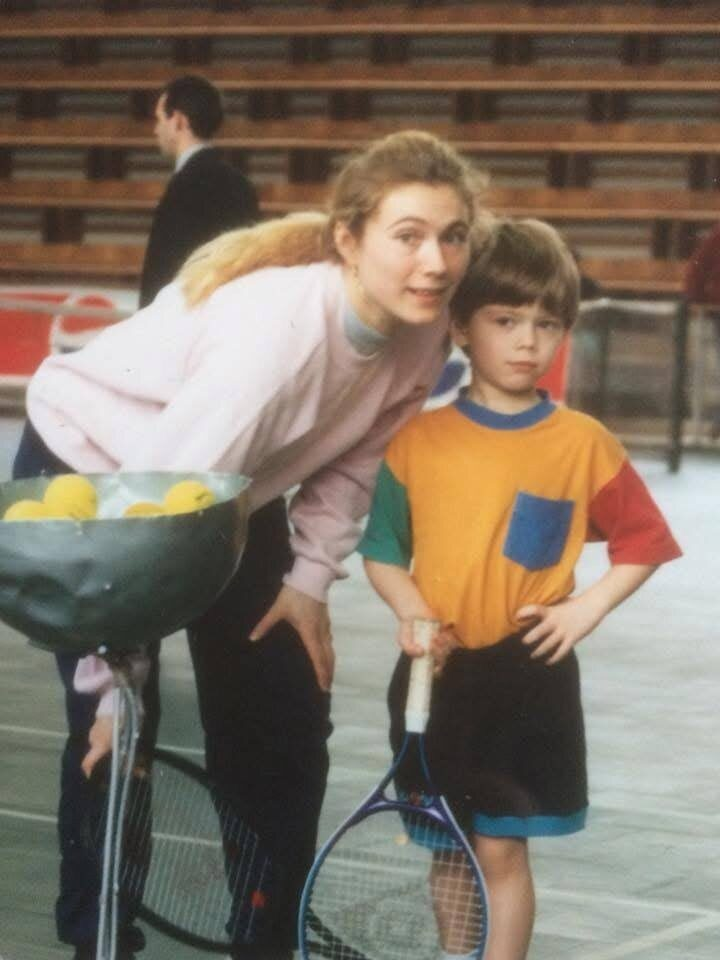
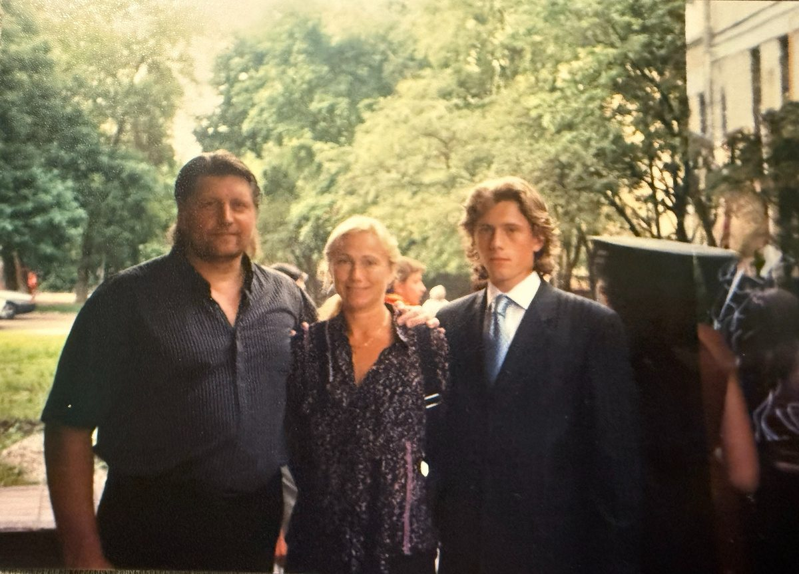
Путь
Айкидо Иван начал заниматься с детства под руководством отца и других наставников. Параллельно серьёзно занимался теннисом: в 16 лет выполнил норматив кандидата в мастера спорта. Уже в подростковом возрасте проявился его стиль — осмысленное погружение в технику: механика движений, прикладной смысл, этический контекст будо.
В 21 год Иван получил чёрный пояс. В 23 года аттестовался на 2 дан в английском Честере под руководством шихана Минору Канецуки (7 дан), одного из ведущих мастеров мирового айкидо. В 2013 году вошёл в сборную команду России по айкидо и выступил на Вторых Всемирных играх боевых искусств в Санкт-Петербурге. Победитель Кубка России по айкидо.
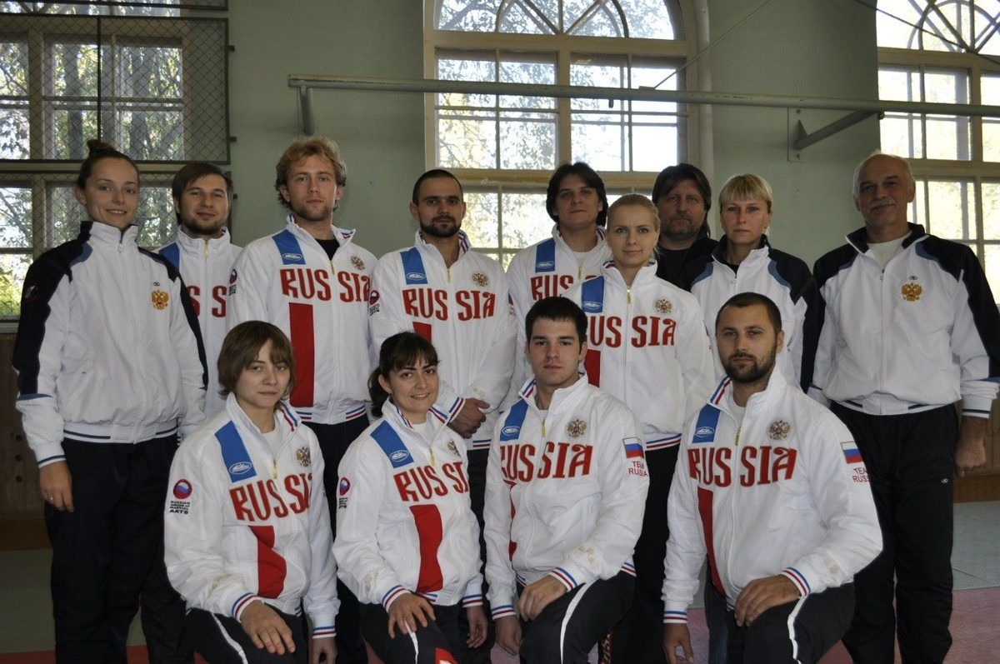
Школа Тэн Шин айкидо
В 2015 году произошла знаковая встреча со Стивеном Сигалом (7 дан айкидо), которая кардинально изменила вектор развития Ивана:
- Он стал учеником Сигала и официальным представителем его школы в РФ
- Глубоко освоил каноны Тэн Шин айкидо: прикладное применение техник, контроль дистанции, использование энергии противника
«В то время я был членом сборной команды России по айкидо. Со мной связался исполнительный директор Национального совета айкидо России, Игорь Юрьевич Кастюкевич (ныне сенатор РФ), и предложил ассистировать Стивену Сигалу во время показательного выступления на открытии турнира по самбо в Саратове. Конечно же, я согласился. Мы встретились с мастером Сигалом в «Ритце», где он жил в то время, и прямо на ковре в его номере он показал на мне несколько техник. Я был в полном восторге!»
Иван прошёл путь до 5 дана Тэн Шин айкидо, что подтверждает не только технический уровень, но и методическую компетентность, способность передавать знания.
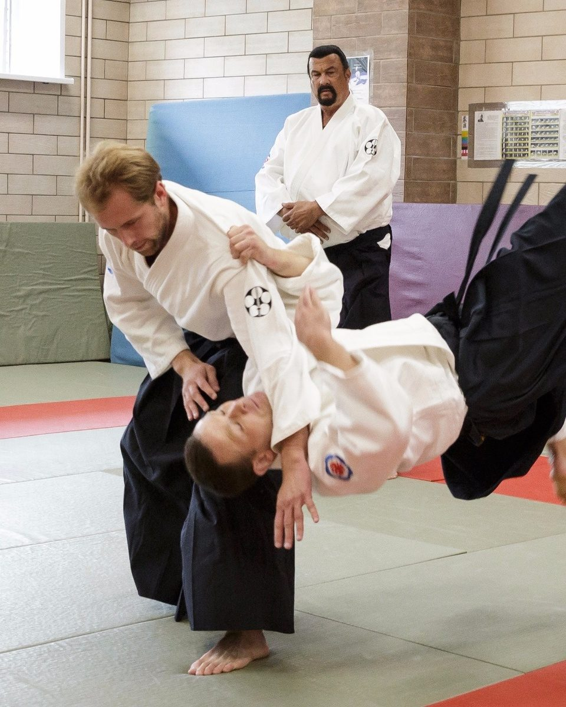
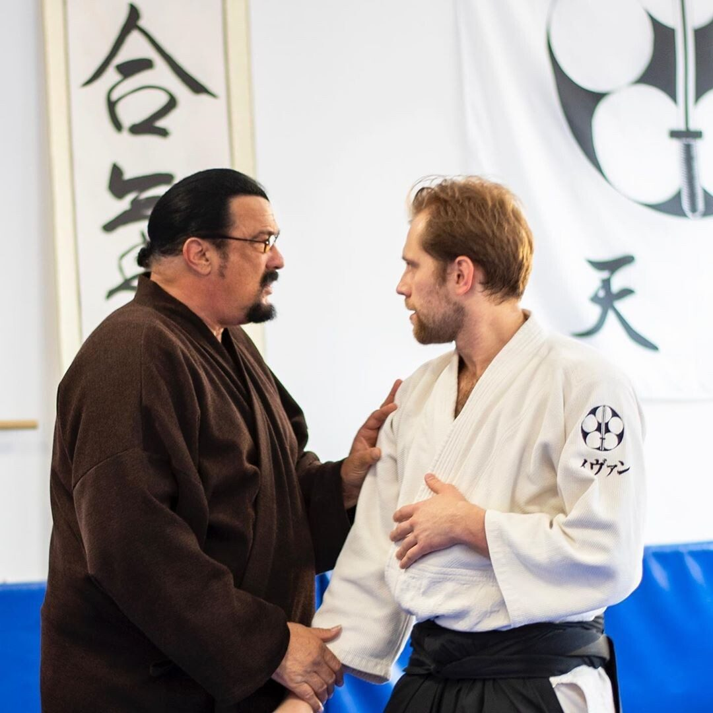
Проект «Спорт как искусство»
Проект вырос из убеждения: боевое искусство — это искусство в прямом смысле. Его движение, точность и характер воспринимаются как эстетика, а практика формирует личность.
Во время образовательного заезда на арт-кластере «Таврида» в творческом посёлке Счастливцево в сентябре 2025 года Иван познакомился с единомышленниками — так была основана команда проекта.
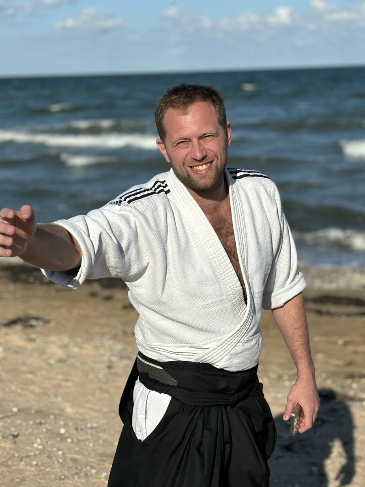
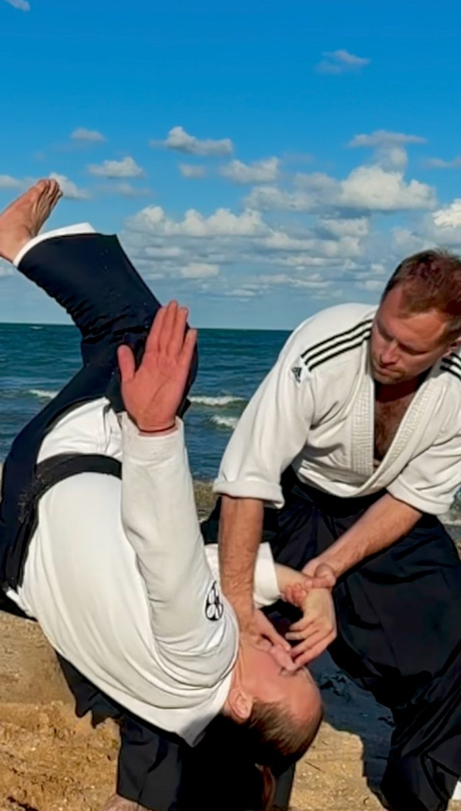
В ноябре 2025 года команда во главе с Иваном, по приглашению Турпал-Али Амирсултановича Джабраилова, спортивного деятеля в области боевых искусств, руководителя регионального отделения Национального Совета Айкидо России и Федерации Айкидо Чеченской Республики, посетила Чеченскую Республику с презентацией проекта «Спорт как искусство». Во время визита было подписано соглашение о сотрудничестве между Федерацией Айкидо Чеченской Республики и Федерацией айкидо России; в его рамках представители проекта получили ряд должностей в регионе, а Иван стал вице-президентом Федерации Айкидо Чеченской Республики.
В Чеченской Республике проект был представлен в образовательных учреждениях:
- Чеченский государственный университет имени А. А. Кадырова
- Российский Исламский университет имени Кунта-Хаджи
- Грозненский государственный нефтяной технический университет имени академика М. Д. Миллионщикова
- Российский университет спецназа имени В. В. Путина
- Чеченский государственный педагогический университет
- МБОУ СОШ № 42
- Республиканский комплекс общего и дополнительного образования «Квант»
Затем проект «Спорт как искусство» был представлен на Всероссийском образовательном семинаре Российского Союза боевых искусств «Команда РСБИ» в Центре знаний «Машук» в Пятигорске.
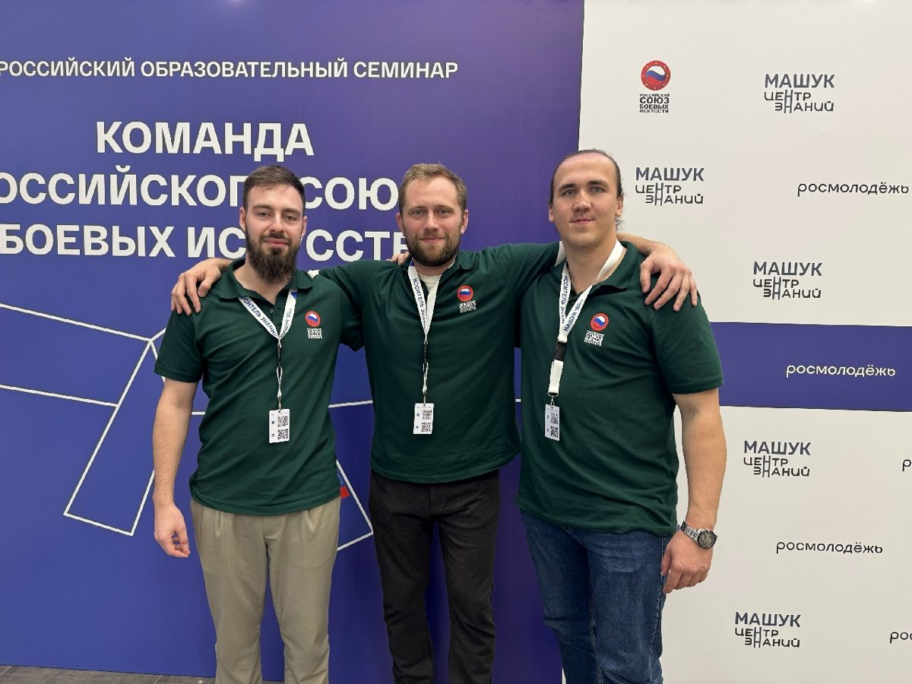
Работа продолжается в активной фазе: проект запущен на площадке Хорошколы, где реализуются первые мероприятия и направления. Открытые мастер-классы Иван проводит и в программе «Лето в Москве», в том числе в День города в парке «Усадьба Трубецких в Хамовниках».
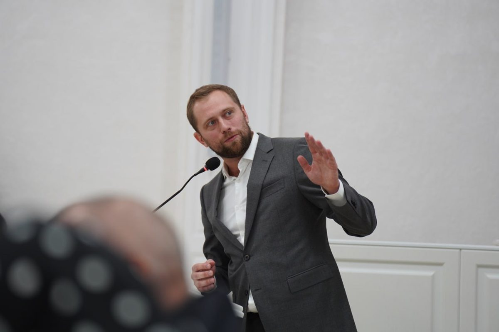
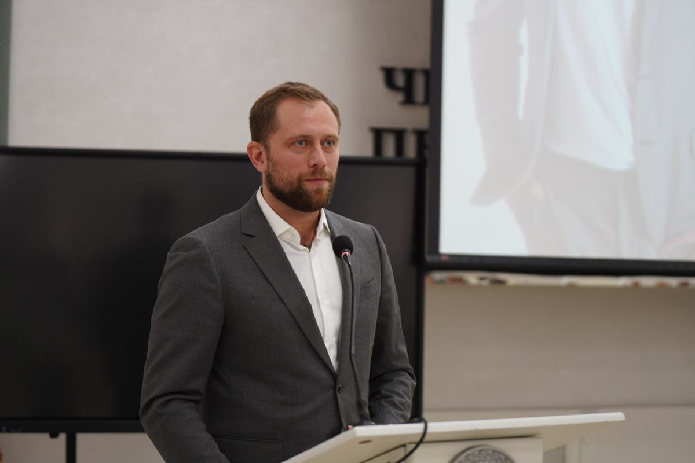
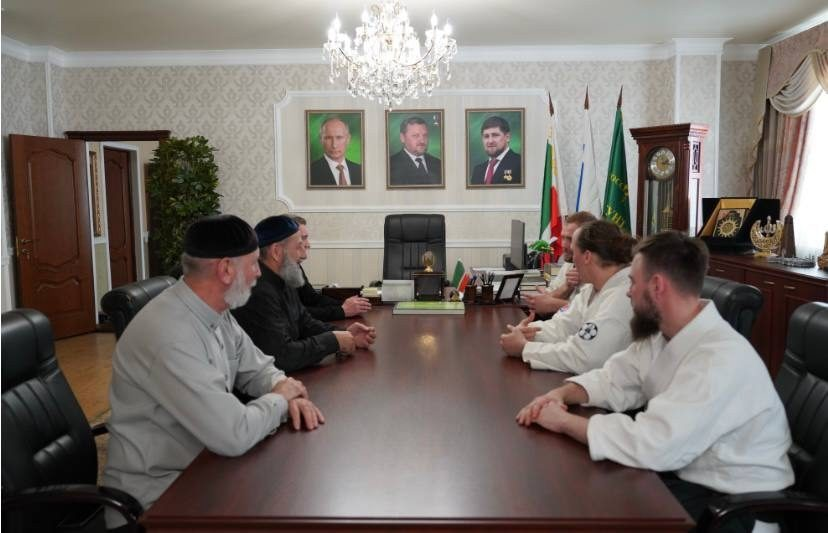
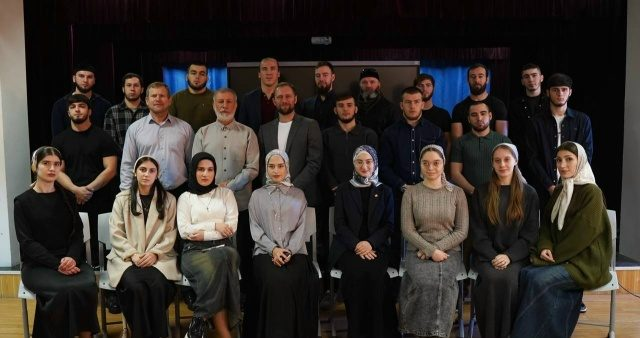
Наставничество и организаторская работа
- Главный тренер Федерации айкидо России — методическое обеспечение, подготовка тренеров и спортсменов, стандарты обучения, система аттестаций
- Вице-президент Федерации Айкидо Чеченской Республики — развитие айкидо в регионе, семинары и аттестации
- Руководитель по работе с молодёжью и школами ФАР — секции в образовательных учреждениях, программы для разных возрастов, детско-юношеские турниры
- Официальный ассистент и представитель Стивена Сигала в РФ
- Основатель Универсального айкидо в России — прикладного направления с авторской методикой
- Проектное сотрудничество с Национальным Советом Айкидо России
- Руководитель спортивных направлений арт-платформы New ART Flux
- Лекторская деятельность в Российском обществе «Знание»
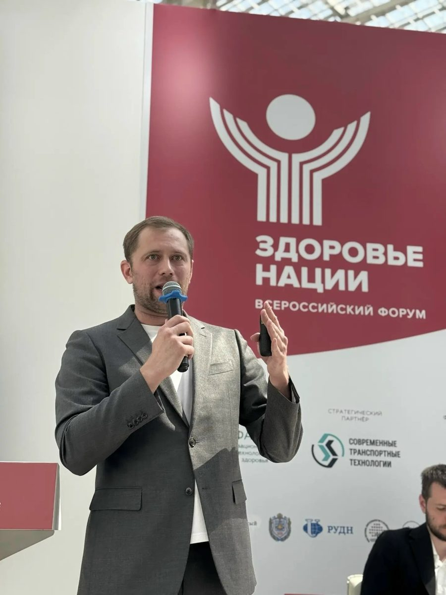
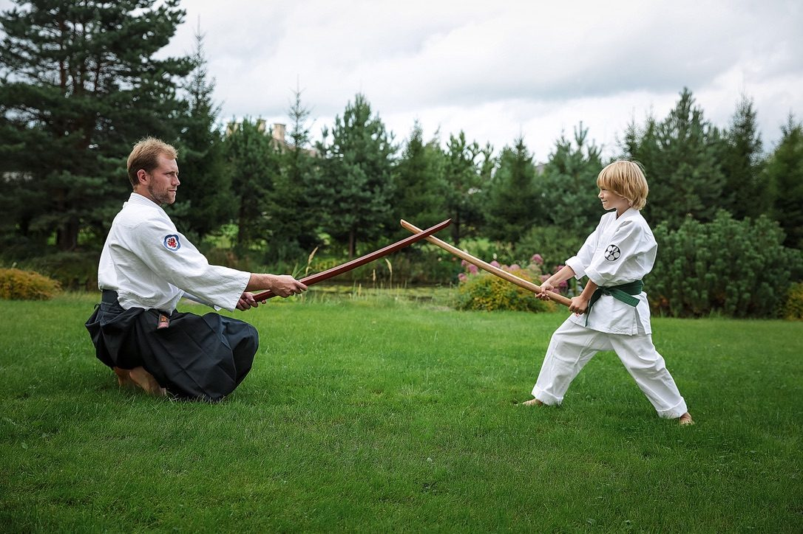
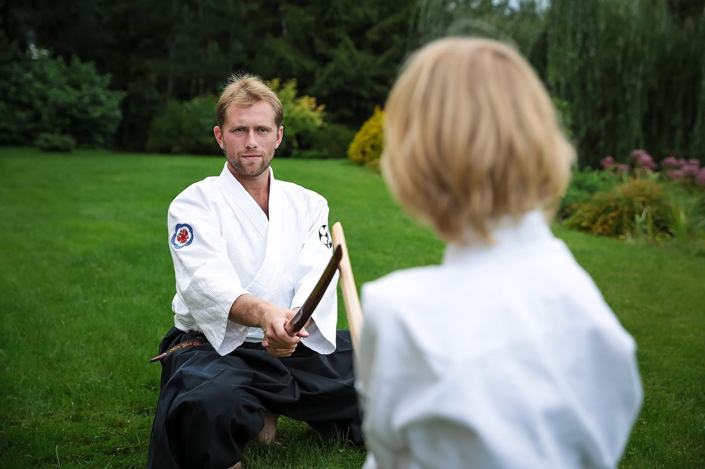
Признание
- 5 дан Тэн Шин айкидо, мастер спорта России по айкидо
- Победитель Кубка России по айкидо, участник Всемирных игр боевых искусств в составе сборной России
- Лауреат премии Национального Совета Айкидо России «Торнадо» (2025) в номинации «За популяризацию айкидо в медиапространстве России»
- Многократный обладатель премии Федерации айкидо России «Снежный барс»
- Более 1,5 млн подписчиков в социальных сетях — один из самых заметных голосов айкидо в российском медиапространстве
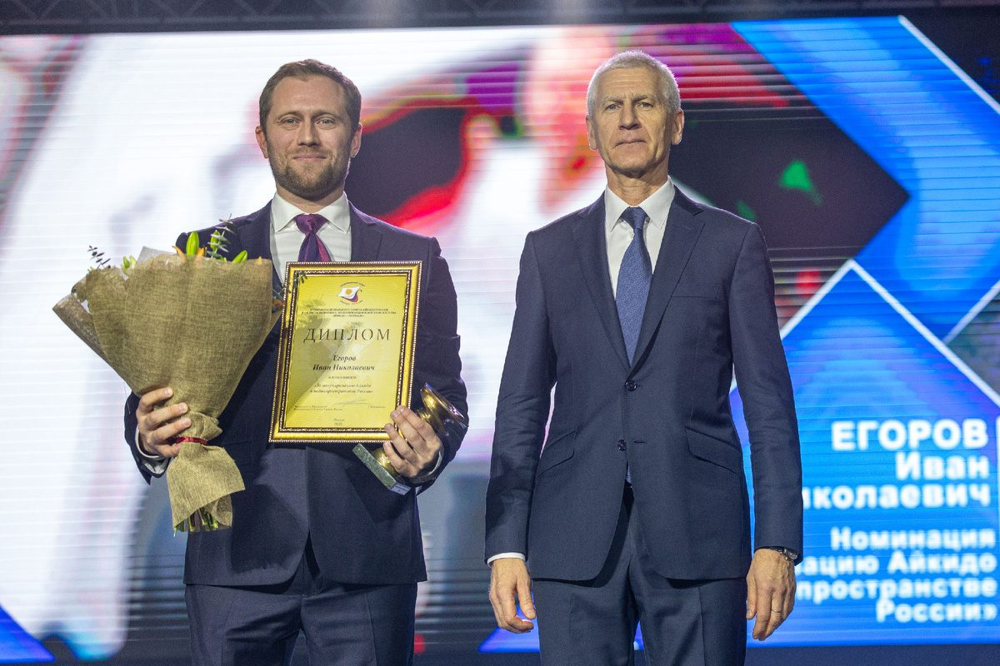
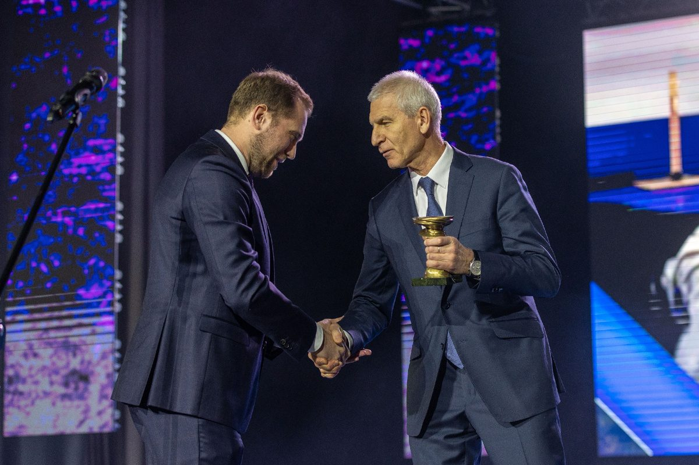
Запись открыта
Приходите
на татами.
Занятия айкидо для детей, подростков и взрослых — в Москве и по всей России. Ответим в мессенджере, подберём зал и удобное время.
Записаться на тренировку